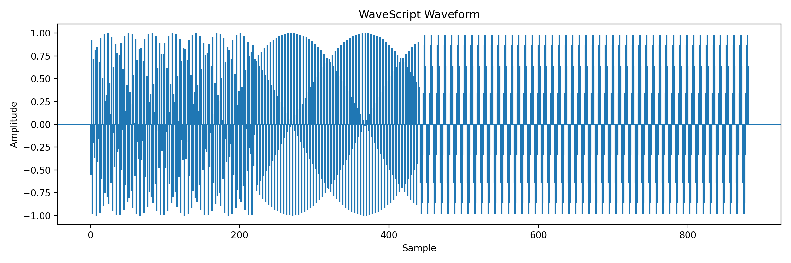

Language Purpose
Explain how WaveScript connects source code, musical syntax, sound events, audio output, and waveform visualization.
Programming language final project
WaveScript is a small music-shaped programming language where code can run like a normal program and also become sound, waveform images, and sheet music.

Website outline
Explain how WaveScript connects source code, musical syntax, sound events, audio output, and waveform visualization.
Show the completed grammar, parser, interpreter logic, variables, loops, conditionals, print behavior, and event generation.
Include Hello World, FizzBuzz, and melody examples so visitors can see what WaveScript programs look like.
Show how the event list becomes audio files, waveform images, spectrograms, and LilyPond sheet music.
Completed contribution
Person A work covers the path from WaveScript source code to program execution and sound event generation. The interpreter produces the event list that the audio, visualization, and sheet music backends use.
grammar/wavescript.tx.wave and .ws style programslet, if, else, for, and printProject roles
Jania's part takes WaveScript source code through the TextX parser, interpreter, and event generator.
Greta's part starts with the shared event list and turns it into the final creative outputs.
show waveform audio and export score "output.ly"Language design
Statements combine notes, durations, arrows, and commands.
C4 q -> print "Hello"
The same program can print output and create a timed musical phrase.
musical syntax -> sound events
Each generated event can be passed to audio and visualization tools.
{ pitch, frequency, start, duration }
Sample programs
tempo 120
C4 q -> print
melody "Hello"
G4 h -> endtempo 140
D4 q -> for i in 1..15
E4 e -> if i % 15 == 0
C5 s -> print "FizzBuzz"
F4 e -> else if i % 3 == 0
A4 s -> print "Fizz"
G4 e -> else if i % 5 == 0
B4 s -> print "Buzz"
C4 q -> else
C4 q -> print i
G4 w -> endGenerated output
WaveScript generates timed sound events first. Backends can then synthesize audio, render waveform images, and export LilyPond sheet music.
Submission links
Live Website Link: https://starremi.github.io/WaveScript/
Git Source Code Link: https://github.com/starremi/WaveScript.git